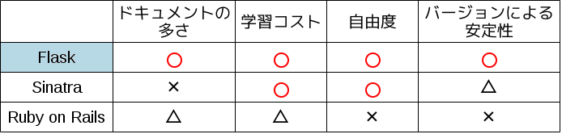
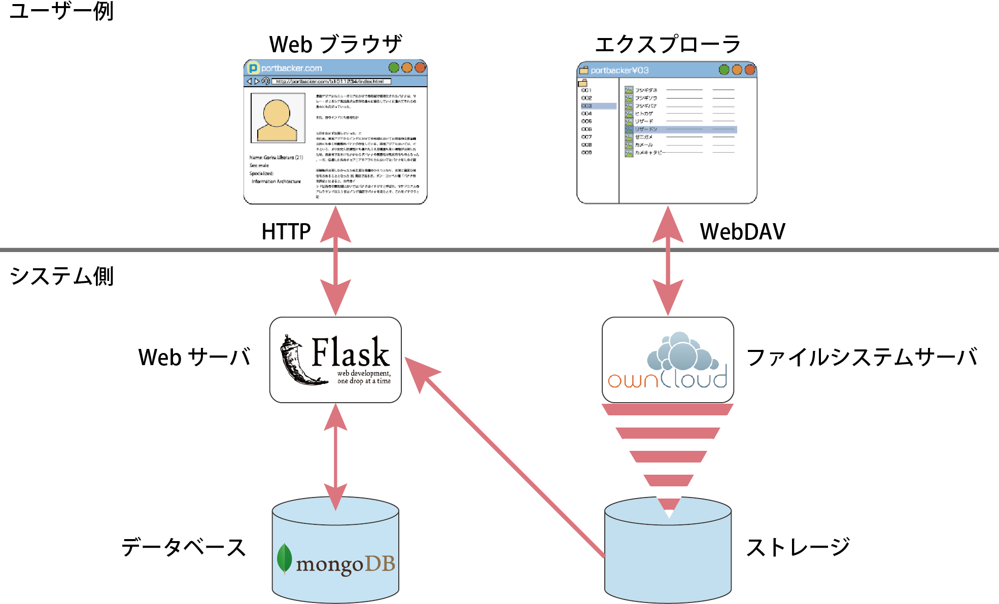

高度ICT演習向け
eポートフォリオシステムの開発
B2
内山 武尊
川口 拓郎
藤原 拓郎
水尻 裕人
諸原 聖
教員
神谷 年洋
B3
赤木 勇極
菅野 久樹
佐藤 祐磨
中田 友貴
B4
◎中野 佑
長崎 洸祐
山本 賢人
目次
未来大学におけるPBL
現在の問題
教育系の目的
eポートフォリオシステム
システムの全体像
学び
スケジュール
まとめ
背景(1/2)
公立はこだて未来大学の特徴的な授業にPBLがあり
PBL型の授業として
高度ICT演習
がある
単位が出ない
中、学生が自主的に
活動を行う
ソフトウェア開発のプロセスを経験し、
基礎となる知識やスキルを習得する
背景(2/2)
受動的な学習 (e.g. 座学)
座学の授業で教師による一方的な
知識伝達
テストによる評価が行われる
能動的な学習 (e.g. ICT演習)
学習者の自律性や
自主性に重点を置く
社会にある解のない複雑な問題に
対応する力を身につける
問題
受動的な学習の中で、大学ではMoodle
*
を
導入している。
→学生目線での学習支援はしていない。
能動的な学習には支援するシステムが無い。
教員は学生に合わせた指導ができない。
*
Moodle：Course Management Systemの一種
教育系の目的
高度ICT演習における学生の
学習の振り返り
*
及び担当教員の
指導
を
支援する
担当教員と学生からeポートフォリオシステムの要件を収集する
*
学習の振り返り :
過去の活動を見返して、良かったことと悪かったことを
正しく認識する。また、他者からのフィードバックにより
新たな気付きなどを得ること
eポートフォリオシステム
ポートフォリオは学習者の学習活動の可視化が可能
紙のポートフォリオと比較して…
ネットワークを介した相互利用が可能
維持管理が容易
導入例
金沢工業大学 KITポートフォリオシステム
ヒアリング(5月末)
ステークホルダーである高度ICT演習の
担当教員に、eポートフォリオシステムに
ついての会議を開きました
ヒアリング結果
高度ICT演習向けのシステム
を開発して
欲しい
PDCAサイクルを回せるようにして
欲しい
動くシステムを定期的に見せて欲しい
PDCAサイクル
具体例(1/2)
① plan
ポートフォリオシステムと
データベースを連携させる
② do
データベースに関するドキュメント
を読んでソースコードを作成し、
メンバーとの情報共有のために
ドキュメントを蓄積する
具体例(2/2)
③ check
参考にしたwebページのURLや
蓄積されたドキュメントを元に
ポートフォリオを作成する
④ action
先生からデータ構造を
ドキュメント化したのかと
フィードバックをもらう
新しいplan
先生からのフィードバックをふまえて、
今度は扱うデータベースのデータ構造を
メンバー全員で考えてドキュメント化する
提案システムの利用図
使用技術の選定(1/2)
既存のeポートフォリオシステムを比較した
資料 : 宮崎誠 (2011)「eポートフォリオシステム評価 - Mahara vs Sakai OSP -」 (法政大学情報メディア教育研究センター研究報告 Vol.25 特別号 2011年)
要求を引き出しながら適応的に開発する
必要がある。
使用技術の選定(2/2)
使用するWebサーバのフレームワーク比較

比較した結果、Flaskを
採用する
システムの構成図

開発体制
・個人のスケジュールが異なるため、全員が集まらなくても開発が進むようにしたい
→Github
*
を導入した
*
Github: 分散型バージョン管理システムGitを
使ったホスティングサービス
学び: コマンドを覚えなければ効率良く更新が行えない。
前期の活動の学び
複数のステークホルダーの意見をまとめる
のが大変だと感じた
Githubを用いた分散開発の実証を行うこと
ができた
タスク管理の重要性を認識した
スケジュール
後期までの課題
メンバー間でプロジェクトの目的や
具体的に実装するものを共有する必要がある
使用技術の選定にもっと時間をかける
必要がある
まとめ
未来大学の特色 ~ PBLについて ~
現在の問題
教育系の目的
eポートフォリオシステムについて
システムの全体像
使用技術の選定
学び
スケジュール
←
→
/
Go to slide:
#